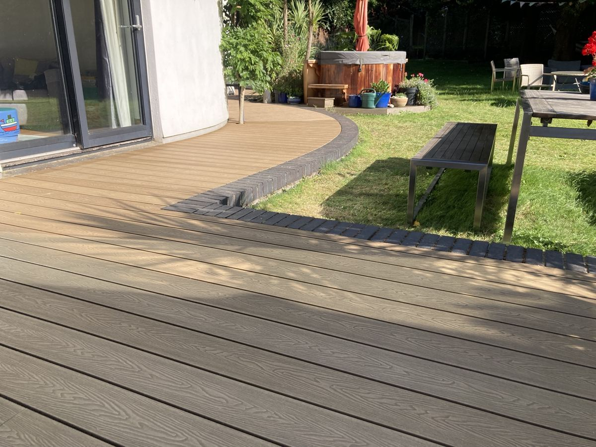
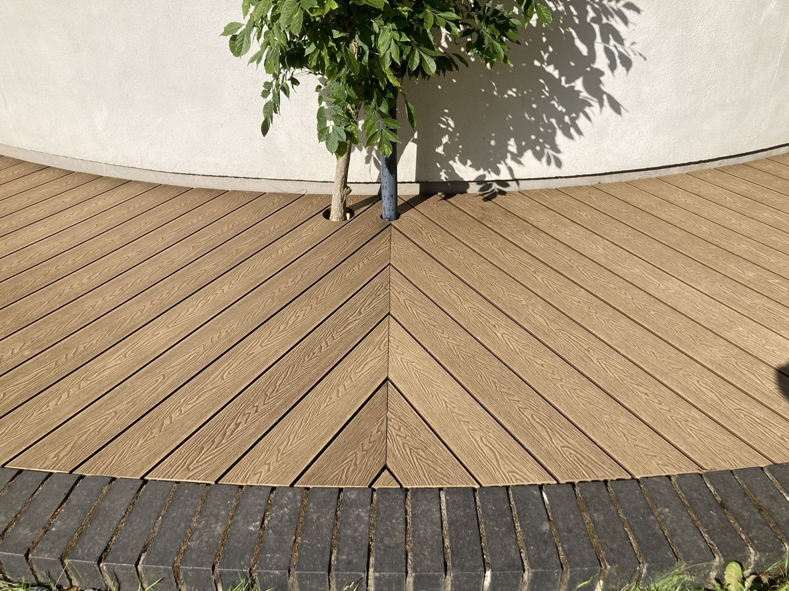
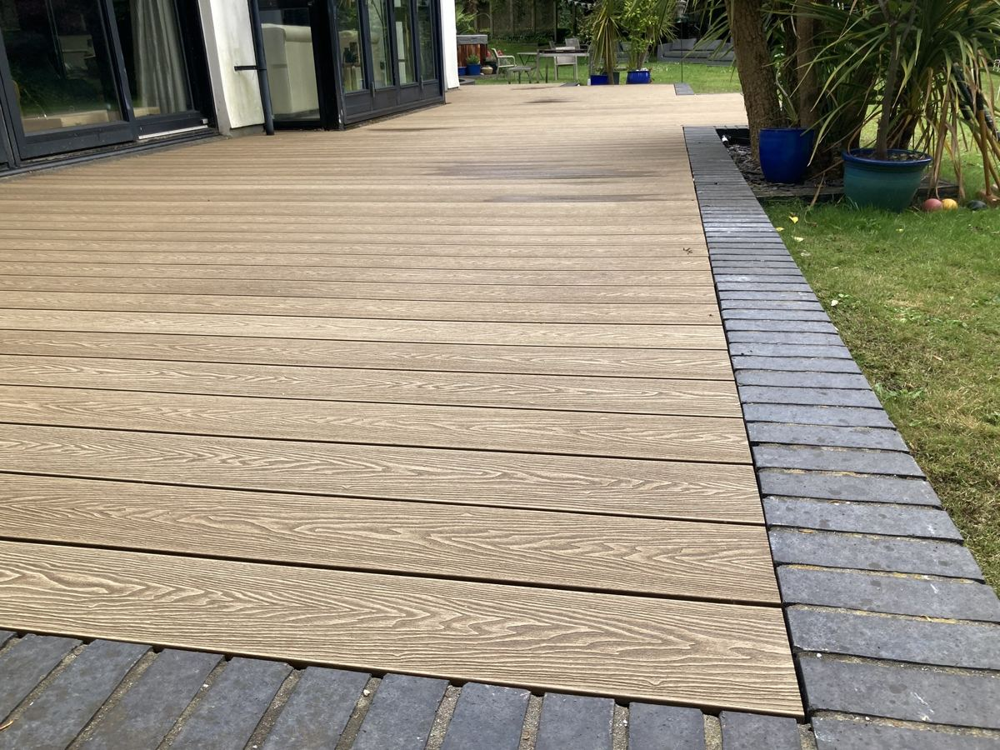

Composite decking in Bristol, South Glos & surrounding areas
The complete guide to composite decking — what it actually delivers, where the cheap versions fall short, and why Millboard is where I start every conversation.
What Composite Decking Actually Delivers
The composite decking market has matured significantly. The early generation — hollow-core boards that faded, warped in heat and looked plasticky within five years — is what most people picture when they hear "composite." The quality end of the current market is a genuinely different product.
Quality composite boards are made from a mix of wood fibre and recycled plastic, with a capped protective layer that resists staining, UV fade, and moisture. They don't need oiling. They don't need treating. They need an occasional wash-down and nothing else.
The trade-off is cost — good composite can cost anything up to four times as much as treated softwood. But when you factor in the ongoing maintenance costs of timber (oiling, treating, replacing boards), the lifetime cost difference narrows considerably, and for many homeowners reverses entirely.
- Near-zero maintenance — no annual oiling, no re-treating, no board replacement from weathering
- 25-year warranties — quality products genuinely back this up; cheap brands don't
- No splintering — safer for children, bare feet, and elderly family members
- Slip resistance — textured capped surfaces outperform timber in wet British conditions
- Consistent colour — doesn't grey or silver the way untreated timber does
- Suitable for all orientations — including shaded, damp, or north-facing gardens where timber struggles
Millboard
If a customer asks what I'd put in my own garden, the answer is Millboard. Every time.
Most composite boards are extruded — pushed through a die in a repeated pattern. Millboard boards are moulded from real hardwood samples, which means every board has a different grain, knot structure, and surface texture. From two metres away, you genuinely can't tell it from timber.
They're also solid-core, not hollow — which means they don't drum underfoot, don't flex, and hold fixings the way timber does. I've installed Millboard on a number of jobs and never had a warranty call.
I work with other composite products where budget requires it, but Millboard is where I start every composite conversation.
A recent composite job
An old, oversized deck stripped out, the subframe rebuilt, and new composite boards laid to follow the curve of the house, with a herringbone joint around the tree.



“So impressed with Darren at Dragonfly Woodcraft. He replaced our enormous decking and the subframe with great skill and intelligence. Clearly a perfectionist who is committed to giving good service. We can recommend him without reservation.”
Composite vs Timber:
Side By Side
Neither material is universally better. The right choice depends on your budget, garden, and how you want to use the space. Here's the honest breakdown.
Composite
Timber
I'll give you an honest recommendation based on your specific garden and budget — not based on which has the better margin for me.
Composite Decking FAQ
Straight answers. If yours isn't here, call or WhatsApp.
Ready To Talk
About Your Project?
Call or WhatsApp. No forms, no obligation — just a straight conversation about what you want and what it'll cost.